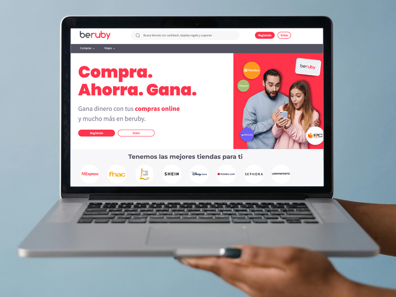
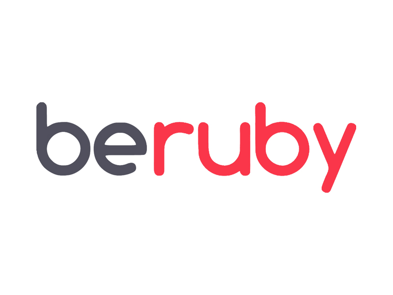
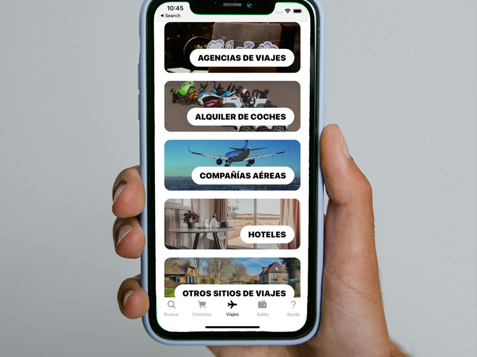

beruby
Online cashback and savings platform. Work focused on improving user experience, visual clarity and conversion flow optimization.



Skills
- UI Design
- UX Optimization
- HTML
- CSS
- Design Systems
- Responsive Layout
Responsibilities
- Interface design
- Prototyping
- Brand identity redesign
- Usability improvements
Description
UX/UI design for the beruby cashback platform, along with the creation of digital marketing materials including banners, newsletters and landing pages.
The main goal of the project was to simplify the interface and improve the user’s understanding of the cashback value proposition. Work focused on visual hierarchy, noise reduction and clarity of primary call-to-action points.
Key components were redesigned, the sign-up flow was optimized and visual consistency across sections was improved.